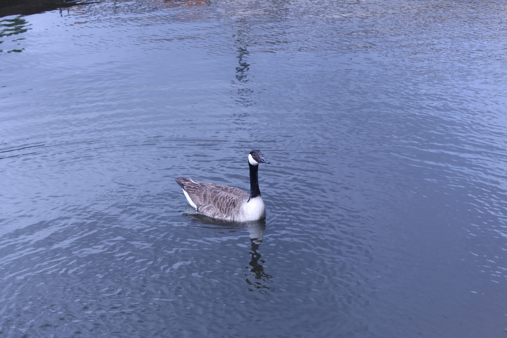
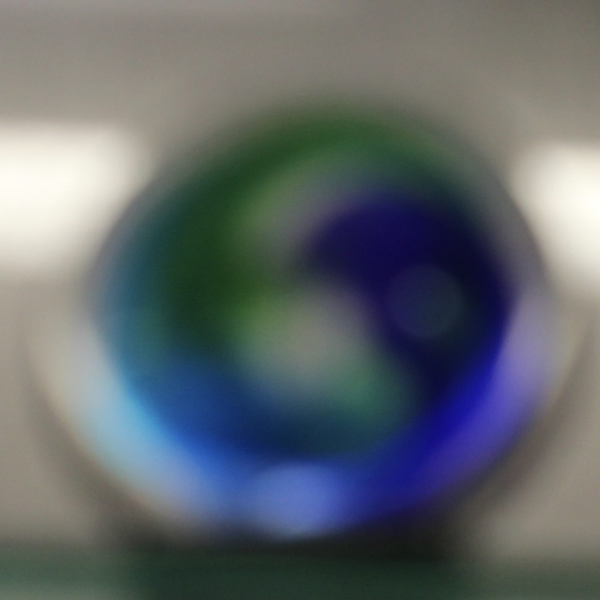
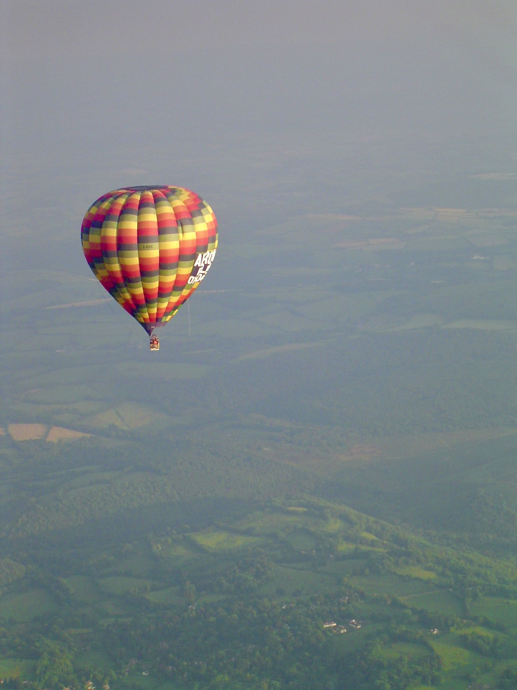

“In its aimless wanderings this particular chunk of matter happens to find itself in the nose.”
wavelength450 to 495 nm
frequency6.1 to 6.7×10¹⁴ Hz
photon energy2.5 to 2.8 eV



“In its aimless wanderings this particular chunk of matter happens to find itself in the nose.”


